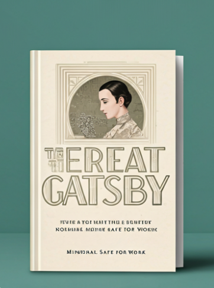
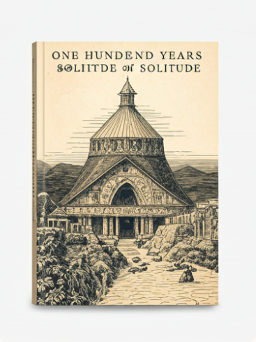
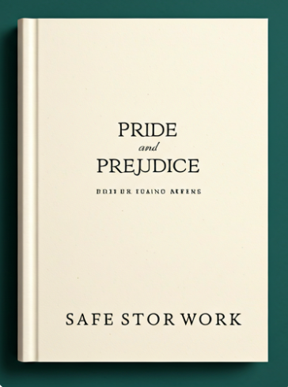

Descubre el placer de leer juntos
Nuestro club de lectura te invita a explorar nuevos mundos, compartir ideas y conectar con otros amantes de los libros. Cada mes, seleccionamos un libro fascinante para discutir y disfrutar
Nuestro club de lectura te invita a explorar nuevos mundos, compartir ideas y conectar con otros amantes de los libros. Cada mes, seleccionamos un libro fascinante para discutir y disfrutar
Una joven descubre un jardín abandonado que guarda secretos y magia, transformando su vida y la de quienes la rodean.

F. Scott Fitzgerald

Gabriel García Márquez

Jane Austen